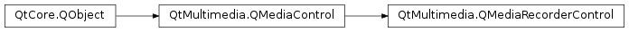

QMediaRecorderControl¶
Detailed Description¶
The
PySide2.QtMultimedia.QMediaRecorderControlclass provides access to the recording functionality of aPySide2.QtMultimedia.QMediaService.Generally you will use the
PySide2.QtMultimedia.QMediaRecorderclass in application code - this class is mostly used when implementing a newPySide2.QtMultimedia.QMediaServiceor if there is access to specific low level functionality not otherwise present inPySide2.QtMultimedia.QMediaRecorder.If a
PySide2.QtMultimedia.QMediaServicecan record media it will implementPySide2.QtMultimedia.QMediaRecorderControl. This control provides a means to set theoutput location, and record, pause and stop recording via thePySide2.QtMultimedia.QMediaRecorderControl.setState()method. It also provides feedback on thePySide2.QtMultimedia.QMediaRecorderControl.duration()of the recording.The interface name of
PySide2.QtMultimedia.QMediaRecorderControlisorg.qt-project.qt.mediarecordercontrol/5.0as defined inQMediaRecorderControl_iid().
-
class
PySide2.QtMultimedia.QMediaRecorderControl([parent=nullptr])¶ Parameters: parent – PySide2.QtCore.QObjectConstructs a media recorder control with the given
parent.
-
PySide2.QtMultimedia.QMediaRecorderControl.actualLocationChanged(location)¶ Parameters: location – PySide2.QtCore.QUrl
-
PySide2.QtMultimedia.QMediaRecorderControl.applySettings()¶ Commits the encoder settings and performs pre-initialization to reduce delays when recording is started.
-
PySide2.QtMultimedia.QMediaRecorderControl.duration()¶ Return type: PySide2.QtCore.qint64Return the current duration in milliseconds.
-
PySide2.QtMultimedia.QMediaRecorderControl.durationChanged(position)¶ Parameters: position – PySide2.QtCore.qint64
-
PySide2.QtMultimedia.QMediaRecorderControl.error(error, errorString)¶ Parameters: - error –
PySide2.QtCore.int - errorString – unicode
- error –
-
PySide2.QtMultimedia.QMediaRecorderControl.isMuted()¶ Return type: PySide2.QtCore.boolReturns true if the recorder is muted, and false if it is not.
-
PySide2.QtMultimedia.QMediaRecorderControl.mutedChanged(muted)¶ Parameters: muted – PySide2.QtCore.bool
-
PySide2.QtMultimedia.QMediaRecorderControl.outputLocation()¶ Return type: PySide2.QtCore.QUrlReturns the current output location being used.
-
PySide2.QtMultimedia.QMediaRecorderControl.setMuted(muted)¶ Parameters: muted – PySide2.QtCore.boolSets the
mutedstate of a media recorder.
-
PySide2.QtMultimedia.QMediaRecorderControl.setOutputLocation(location)¶ Parameters: location – PySide2.QtCore.QUrlReturn type: PySide2.QtCore.boolSets the output
locationand returns if this operation is successful. If file at the output location already exists, it should be overwritten.The
locationcan be relative or empty; in this case the service should use the system specific place and file naming scheme.After recording has started, the backend should report the actual file location with
PySide2.QtMultimedia.QMediaRecorderControl.actualLocationChanged()signal.
-
PySide2.QtMultimedia.QMediaRecorderControl.setState(state)¶ Parameters: state – PySide2.QtMultimedia.QMediaRecorder.StateSet the media recorder
state.
-
PySide2.QtMultimedia.QMediaRecorderControl.setVolume(volume)¶ Parameters: volume – PySide2.QtCore.qrealSets the audio
volumeof a media recorder control.The volume is scaled linearly, ranging from
0(silence) to100(full volume).
-
PySide2.QtMultimedia.QMediaRecorderControl.state()¶ Return type: PySide2.QtMultimedia.QMediaRecorder.StateReturn the current recording state.
-
PySide2.QtMultimedia.QMediaRecorderControl.stateChanged(state)¶ Parameters: state – PySide2.QtMultimedia.QMediaRecorder.State
-
PySide2.QtMultimedia.QMediaRecorderControl.status()¶ Return type: PySide2.QtMultimedia.QMediaRecorder.StatusReturn the current recording status.
-
PySide2.QtMultimedia.QMediaRecorderControl.statusChanged(status)¶ Parameters: status – PySide2.QtMultimedia.QMediaRecorder.Status
-
PySide2.QtMultimedia.QMediaRecorderControl.volume()¶ Return type: PySide2.QtCore.qrealReturns the audio volume of a media recorder control.
-
PySide2.QtMultimedia.QMediaRecorderControl.volumeChanged(volume)¶ Parameters: volume – PySide2.QtCore.qreal
© 2018 The Qt Company Ltd. Documentation contributions included herein are the copyrights of their respective owners. The documentation provided herein is licensed under the terms of the GNU Free Documentation License version 1.3 as published by the Free Software Foundation. Qt and respective logos are trademarks of The Qt Company Ltd. in Finland and/or other countries worldwide. All other trademarks are property of their respective owners.